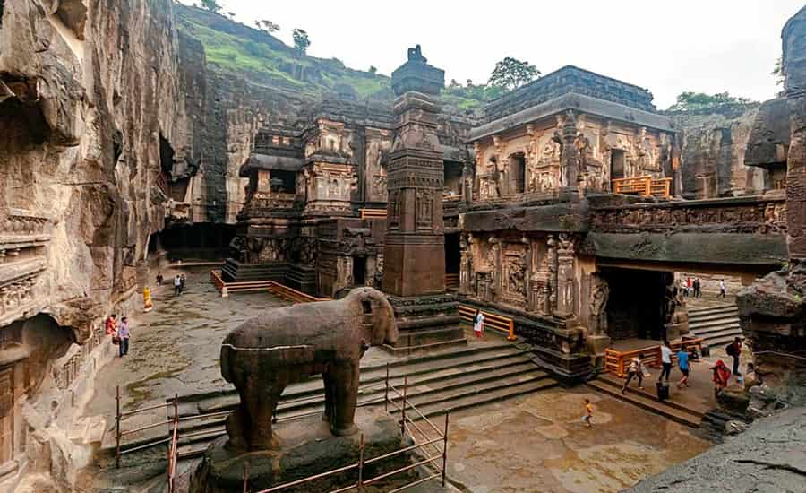

Biwi ka Maqbara
Bibi ka Maqbara,
Having a striking resemblance to Taj Mahal, the Bibi ka Maqbara is a beautiful mausoleum of Rabia- Ul - Daurani alias Dilras Banu Begum, the wife of Mughal Emperor Aurangzeb. Bibi ka Maqbara was constructed by Aurangzeb in the year 1661 in the memory of his wife. Aurangzeb attributed this magnificent edifice in the name of his son Azam Shah who was born in the year 1653, so as to commemorate Rabia - Ul - Daurani, who left for her heavenly abode in the year 1657.
The monument resembles the famous Taj Mahal, as the main inspiration for building the design was from here and is often referred to as the Taj of the Deccan. Bibi ka Maqbara intended to rival the Taj Mahal, but because of the decline in architecture and the proportions of the structure, it completely resulted in a copied form of the same. Incidentally, this is one of the largest structures to have been built during Aurangzeb's reign. The mausoleum is a very popular attraction and the monument along with the backdrop of the mountain ranges bring out something beautiful.


Ellora Caves
Ellora caves,
Another World Heritage Site that the town boasts of, are the Ellora caves, that one must not miss while in Aurangabad. The sculptures here, represent elements of three religions and do so grandly and beautifully.
These 34 monasteries and temples, extending over more than 2 km, were dug side by side in the wall of a high basalt cliff, not far from Aurangabad, in Maharashtra. Ellora, with its uninterrupted sequence of monuments dating from A.D. 600 to 1000, brings the civilization of ancient India to life. Not only is the Ellora complex a unique artistic creation and a technological exploit but, with its sanctuaries devoted to Buddhism, Hinduism and Jainism, it illustrates the spirit of tolerance that was characteristic of ancient India.

Ajanta Caves
Ajanta Caves, Ajanta and Ellora Caves Overview
Located around 99 km from the town of Aurangabad, lie the Ajanta Caves now included in the list of UNESCO World heritage Sites. Ajanta caves depict the Buddhist culture and their stories through various sculptures and paintings. It also takes you to the world of Jatakas.
The Ajanta caves is a set of 3rock-cutut Buddhist caves that date back to the period between 2nd century BC and 650 CE. The Ajanta caves are considered one of the most prestigious monuments of India as they house many beautiful paintings and sculptures depicting the rich cultural heritage of India. Naturally used as a retreat by the Buddhist monks, the cave depicts the serenity of Buddhism through its simple yet breathtaking sculpture. The basic designs of the caves are called 'Chaityagrihas' & 'viharas'. Figurines of Lord Buddha and scenes from the traditional Jataka tales are the mainstays of this place. The area used to be heavily forested and the caves fell out of social conscience before being rediscovered by a British hunting officer in 1819.

Soneri Mahal
Located 2 kilometres from the infamous Bibi Ka Maqbara and about 6 kilometres from the Aurangabad Railway Station, is the last remaining Palace in the city, Soneri Mahal. This historical Palace is said to have derived its name from the golden paintings that adorned it in the past. These paintings have now disappeared, leaving the two-storeyed spacious building, which has a Rajput style architecture.
The Palace has a museum within which exhibits ancient pottery, sculptures, household items, antiques and remains of local palaces. This museum is placed on the Dr Babasaheb Ambedkar Marathwada University campus. Soneri Mahal in Aurangabad is the place where the Ajanta and Ellora cave festivals are now held. Famous artists, musicians and dancers are invited to the palace to grace the four-day festival. The grandeur of the palace increases manifolds with the shimmering lights and decorations. The Sunheri Mahal stands as an epitome of architectural splendour, with intricate details and a well-manicured garden.

Siddharth Garden and Zoo
Siddharth Garden, Aurangabad Overview
Sprawling over a large area is the well laid out and green landscaped Siddharth Garden enclosing a park as well as zoo together. It is conveniently located at a distance of about 3 kilometers from the Aurangabad railway station and about 4 kilometers from popular tourist attraction and landmark, Bibi ka Maqbara. The Siddharth Garden is a popular picnic spot for the locals of Aurangabad. The park is especially popular among joggers, nature lovers and photographers. It remains quite crowded in the evenings, especially on weekends.
The vibrant Siddharth Garden is elaborate with vibrant flowers, majestic trees and colourful lawns, which are well designed and maintained. Another highlight of the garden is the zoo, where one can find a number of wild animals such as tigers, lions, leopards, civet cats, snakes, crocodiles, emu, fox, deer, hyena etc. There is also an aquarium in Siddharth Garden where one can look at a variety of colourful fishes. It makes for an enjoyable spot for children. Other beautiful spots in the garden include the musical fountain and the Buddha statue.

Ghrushneshwar Joytirlinga Temple
Grishneshwar temple, Aurangabad Overview
A UNESCO World Heritage Site, Grishneshwar Temple located in Ellora is one of the 12 Jyotirlingas in India. Also known as Ghrneshwar or Dhushmeshwar Temple, this Jyotirlinga in Aurangabad is dedicated to Lord Shiva and is considered an important pilgrimage site. Grishneshwar is the smallest of the Jyotirlingas and is considered the last or the 12th Jyotirlinga of India.
Entry to the Grishneshwar Temple is open to all, but to enter the Garbhagriha (the main sanctum housing the Shiva Linga), men need to be bare-chested. This is also one of the only Jyotirlingas in India where the devotees can touch the Shiva Linga with bare hands.
The temple architecture follows a South Indian Style and it is known to be one of the holiest places to visit in Aurangabad. The five-tiered shikhara of the Grishneshwar Temple is spectacularly carved and constructed in the traditional temple architecture style. Rebuilt several times, the current form temple was built by Queen Ahilyabai Holkar of Indore in the 18th century.

Pitalkhora Caves
One of the earliest caves in Maharashtra, Pitalkhora Caves are located in Chandora hills, near Bharmarwadi village, Aurangabad district. This 3rd-Century rock-cut Buddhist cave complex is the largest group of monuments belonging to the Satavahana Dynasty. Also known as Brazen Glen, the caves are made up of fourteen rock-cut structures which have fine architectural styles and paintings. Out of these fourteen monuments, four are chaityas and the rest are viharas.
The Pitalkhora Caves dates back to the 1st century BC to 5th century AD. Discovered in 1853 and lesser known as compared to Ajanta and Ellora Caves, these exquisite caves boast of beautiful inscriptions of animals and statues of soldiers. They are cut in a variety of basalt rock. However, some of them are damaged due to climatic conditions. The caves are divided into Group I and Group II. Cave number 1 to 9 comes under Group I and 10 to 14 come under Group II. A flight of concrete steps has to be climbed past a beautiful waterfall which makes the sight even more fascinating. Pitalkhora Caves should be definitely in the bucket list of tourists looking for a historical expedition.
Daulatabad Fort
Located 15 km away from the main city of Aurangabad, Daulatabad Fort is an ancient fortification that rises formidably from the midst of verdant greenery. Often hailed as one of the 'seven wonders of Maharashtra', this architectural marvel is believed to have been built in the 12th century. Also known as Devgiri fort, perhaps the most enchanting qualities is its location, from the zenith of which you can capture a mesmerising view of the entire city. You need to hike some 750 odd steps up to the top, but the view down below is a wonderful thing to behold.
One of the most inspiring aspects of the Daulatabad Fort is its design which makes it one of the most powerful fortresses of the medieval period. It is built on a 200 metres high conical hill, which provides this grand fortress with a strategic position, architectural beauty and protection from the enemies. Another unique aspect of the mighty Devgiri Fort is its engineering genius, which not only provided an impregnable defence against enemy forces but also managed irreplaceable resources of water quite well. The contrast of the ancient edifice against the lush green fields of Aurangabad paints a wonderful picture that takes you back through the pages of the days bygone.

Salim Ali Lake
Salim Ali Lake,
Located in the heart of Aurangabad, standing opposite the Himayat Bagh near Delhi Gate, is the pristine Salim Ali Lake. Also known as the Salim Ali Sarovar, this lake is a beautiful bird-watching spot, nesting a wide variety and number of migratory birds. There is also a well-stocked bird sanctuary at the lake which is a humble abode to a number of local and foreign exotic species of birds. Salim Ali Lake is an ideal place to be visited with family and friends. It is a must-visit for photographers, nature lovers and bird watchers.
The lake has been named after a renowned Ornithologist. There is a 60 feet watchtower at the lake which is a perfect spot to click pictures and revel in the panoramic view of the entire city. The best time to visit Salim Ali Lake would be during dawn when one gets to hear the chirping sounds of the birds in addition to watching the sunrise. Even though the lake lies in the middle of the city, its beauty is not shadowed and the city dwellers are often found relaxing away from their weary and mundane lifestyle.